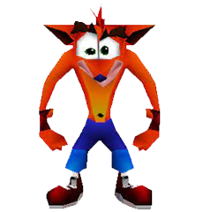
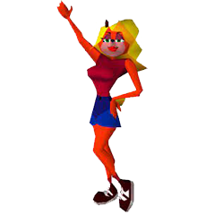
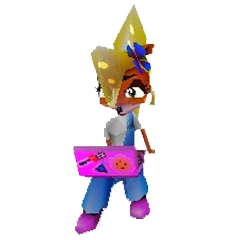
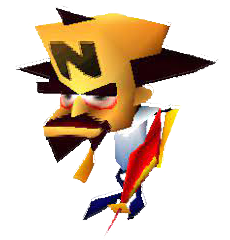

| Crash Bandicoot |  | Es un marsupial antropomórfico de color naranja con pelo amarillo y ojos verdes, y usa unos pantalones cortos azules. Crash fue creado por el científico loco Dr. Neo Cortex como parte de un experimento para crear al arma perfecta. |
| Tawna |  | Tawna es la novia de Crash, quién recorrió las tres islas para salvarla del Doctor Neo Cortex. Es una bandicoot hembra, modificada al igual que Crash. |
| Coco |  | Es la enérgica, inteligente y amable hermana menor de Crash. Suele cumplir un rol protagónico en varios juegos de la saga, siendo un personaje jugable en la mayoría de sus apariciones. Al igual que su hermano, Coco era una bandicoot ordinaria, hasta que fue sacada de la selva, y fue alterada genéticamente por el Dr. Neo Cortex en uno de sus experimentos, aunque logró escapar por su cuenta. |
| Dr. Neo Cortex |  | Es un científico malvado profesional nacido en Peoria, Illinois y el principal antagonista de la saga de Crash Bandicoot. Es mejor conocido como el creador de su némesis: Crash Bandicoot. Cortex suele ser el jefe final de los juegos en los que se encuentra, con algunas excepciones. |